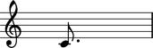

Creating notes
Create notes with a pitch token and a duration token.
abjad> note = Note(0, (1, 4))

Change pitch with a number:
abjad> note = Note(0, (1, 4))
abjad> note.pitch = 2

With a pair:
abjad> note.pitch = ('e', 4)

Or with a Pitch instance:
abjad> note.pitch = Pitch('f', 4)

Any pitch token will work.
TODO: document pitch-to-pitch assignment.
Compare pitch to a number:
abjad> note = Note(0, (1, 4))
abjad> note.pitch == 0 True
To a pair:
abjad> note.pitch == ('c', 4)
True
To a Pitch instance:
abjad> note.pitch == Pitch('c', 4)
True
Or to another pitched Abjad object:
abjad> chord = Chord([0, 2, 10], (1, 4)) abjad> note.pitch == chord.noteheads[0].pitch True
Both pitch token and pitch-to-pitch tests work.
All six Python comparison operators work as expected.
abjad> n1 = Note(0, (1, 4)) abjad> n2 = Note(2, (1, 4))
abjad> n1.pitch == n2.pitch False
abjad> n1.pitch != n2.pitch True
abjad> n1.pitch > n2.pitch False
abjad> n1.pitch < n2.pitch True
abjad> n1.pitch >= n2.pitch False
abjad> n1.pitch <= n2.pitch True
Change duration with a pair:
abjad> note = Note(0, (1, 4))
abjad> note.duration = (1, 8)

With a Rational:
abjad> note.duration = Rational(3, 16)

Or with another duration Abjad object:
abjad> chord = Chord([0, 2, 10], (3, 16)) abjad> note.duration = chord.duration
Both duration token and duration-to-duration assignment work.
Compare duration to a pair:
abjad> note = Note(0, (1, 4))
abjad> note.duration == (1, 4) True
To a Rational:
abjad> note.duration == Rational(1, 4) True
Or to another durated Abjad object:
abjad> chord = Chord([0, 2, 10], (3, 16)) abjad> note.duration == chord.duration False
Both duration token and duration-to-duration testing work.
All six Python comparison operators work as expected.
abjad> Note(0, (1, 8)) == Note(0, (3, 8)) True
abjad> Note(0, (1, 8)) != Note(0, (3, 8)) True
abjad> Note(0, (1, 8)) > Note(0, (3, 8)) False
abjad> Note(0, (1, 8)) < Note(0, (3, 8)) True
abjad> Note(0, (1, 8)) >= Note(0, (3, 8)) False
abjad> Note(0, (1, 8)) <= Note(0, (3, 8)) True
This currently causes reference problems: n1.pitch = n2.pitch. Can we block directly in the implementation? Or must we teach users never to cross references this way?